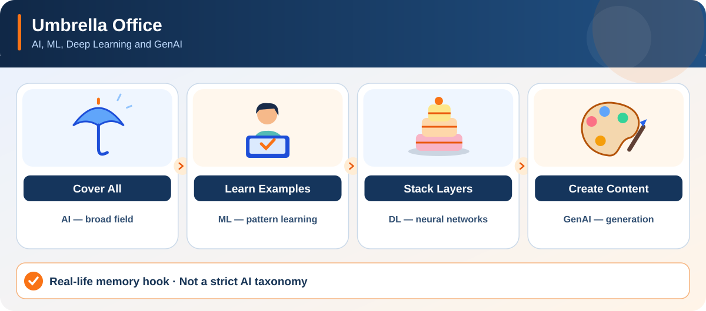

ACTION → TECHNICAL MEANING
Choose a visual story, step through its actions, then explain the technical mapping without reading. The illustrations and walkthrough work offline after cloning/downloading the repository.
Module 01
Illustration + stepwise explorerLoading memory hook...

Memory lock: Hide the explanation, say the full action sequence from memory, map each action to its technical meaning and answer the interview trap. If one step fails, replay just that step.